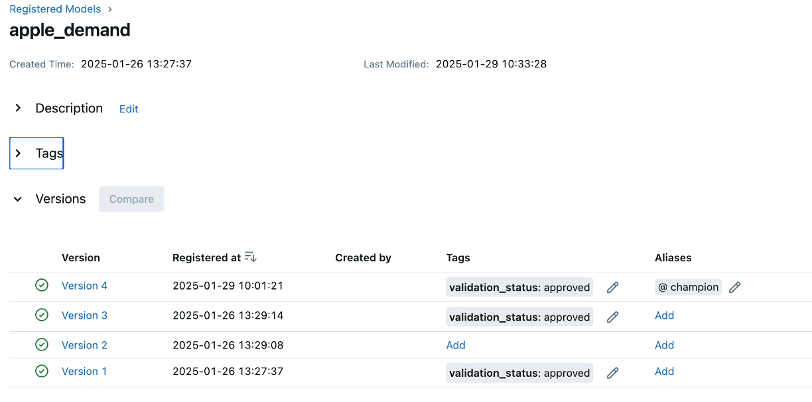
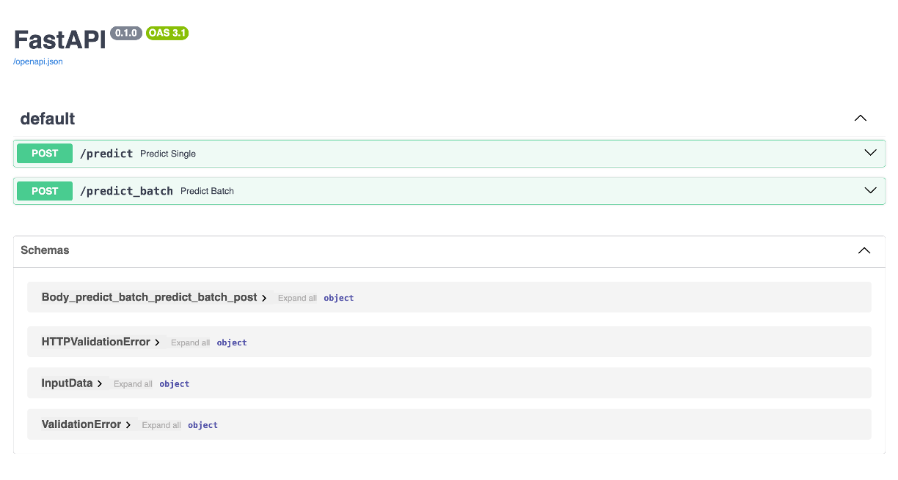
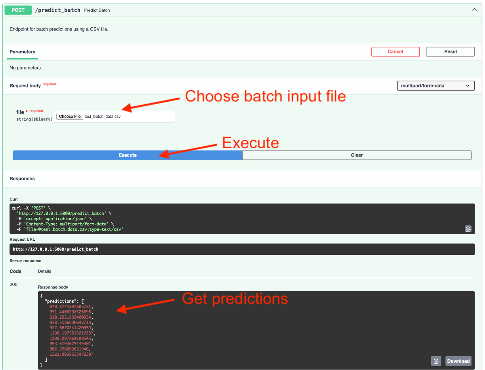
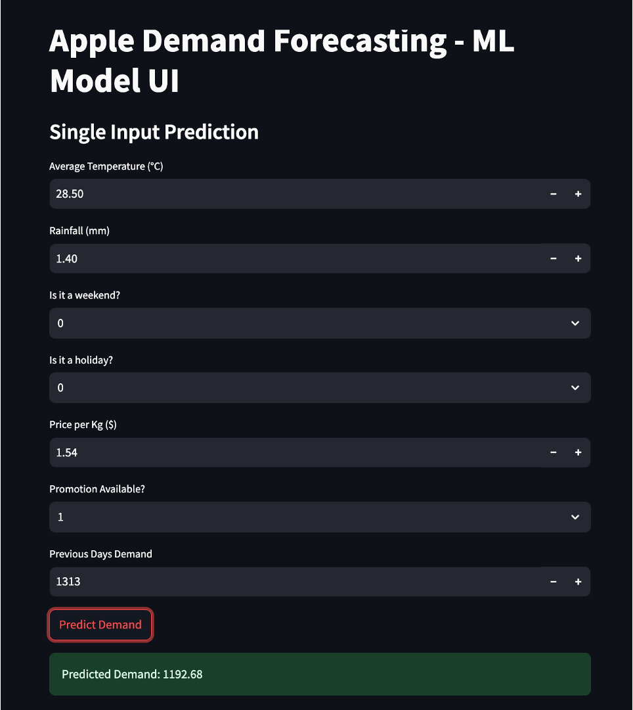

| average_temperature | rainfall | weekend | holiday | price_per_kg | promo | previous_days_demand | |
|---|---|---|---|---|---|---|---|
| 1000 | 28.566576 | 1.405188 | 1 | 0 | 1.542647 | 0 | 1640.0 |
8 Model Deployment
Reading Time: 45-60 minutes
Model deployment is the pivotal stage in the machine learning lifecycle where a trained and validated model transitions from development to production. While the earlier stages of the process—like model training, experimentation tracking, and versioning—focus on optimizing model performance and ensuring reproducibility, deployment brings these efforts to life by delivering actionable insights in real-world environments. A deployed model is not just a static artifact but an operational component that interacts with live data to provide predictions, influence decisions, and generate value for businesses.
For example, consider our apple demand forecasting model that we’ve discussed in the previous two chapters (see Section 6.4 and Section 7.4). During development, the model was trained on historical sales data, hyperparameter tuning was documented, and the best-performing model was versioned. In deployment, this model would be integrated into the retailer’s inventory management system, where it would predict the demand for apples based on real-time needs and inputs.
This chapter builds upon the foundational work covered in the previous chapters. In Chapter 6, we explored experiment tracking, emphasizing the importance of documenting hyperparameters, datasets, and performance metrics. Chapter 7 introduced model versioning, ensuring traceability and reproducibility of model iterations. Now, we turn our attention to deploying models, bridging the gap between experimentation and real-world application. Effective deployment not only ensures that the best-performing models are operationalized but also lays the groundwork for scalability, reliability, and business impact.
Model deployment involves a diverse range of considerations, from choosing the right infrastructure to implementing strategies that ensure minimal disruption during updates. This chapter will provide an introductory understanding of deployment principles, explore popular tools and frameworks, and offer a hands-on example that builds on the apple forecasting problem from previous chapters. By the end of this chapter, you’ll have a roadmap for turning your well-tracked and versioned models into deployed solutions that deliver consistent and reliable results.
8.1 Key Considerations
Deploying machine learning models effectively requires a strategic approach to address a variety of technical and operational factors. A successful deployment ensures that models operate efficiently, scale to meet demand, and integrate seamlessly with existing systems. Below, we outline the key considerations for model deployment and their implications in real-world scenarios.
Scalability
What It Means: Scalability is the ability of a system to handle increased demand without performance degradation. For ML models, this means ensuring that the model can process growing volumes of data or user requests efficiently.
Why It Matters: Scalability ensures the system remains functional and responsive during high-demand periods, such as peak usage times for an e-commerce site or when serving real-time predictions for millions of IoT devices.
Example: During a Black Friday sale, an e-commerce platform’s recommendation engine may need to serve 2-5 times more shoppers than normal. This ability to scale due to increased traffic allows the system to generate personalized product recommendations quickly and accurately regardless of surges in demand.
How to Address:
- Cloud Scalability: Use platforms like AWS Lambda or Google Cloud Functions to automatically scale resources based on traffic. For example, serverless architecture can allocate compute resources dynamically during peak demand.
- Kubernetes: Deploy models in containers managed by Kubernetes to ensure automatic scaling, load balancing, and fault tolerance across distributed systems.
- Distributed Inference Frameworks: Utilize frameworks like TensorFlow Serving or Triton Inference Server to handle high-throughput predictions by distributing workload efficiently across machines.
Latency
What It Means: Latency is the time between sending an input to the model and receiving the prediction. Low latency is critical for applications requiring real-time decision-making.
Why It Matters: High latency can make systems impractical or even dangerous in time-sensitive scenarios, such as fraud detection, autonomous driving, or live video analytics.
Example: A credit card fraud detection system must deliver predictions within milliseconds to either approve or deny transactions, preventing fraudulent activities while minimizing user inconvenience.
How to Address:
- Model Optimization: Techniques like quantization and pruning can reduce the size and complexity of a model.
- Quantization: Converts model weights from high-precision (e.g., 32-bit) to lower-precision formats (e.g., 8-bit), reducing computation time without significant loss of accuracy. Read more about quantization here.
- Pruning: Removes redundant weights or neurons from the model to make it smaller and faster. Read more about pruning here.
- Edge Computing: Deploy the model closer to where data is generated (e.g., on IoT devices or edge servers). For instance, deploying a vision model directly on a camera for anomaly detection avoids the latency of sending data to a central server.
- Hardware Acceleration: Use GPUs, TPUs, or dedicated inference accelerators to speed up computations, particularly for complex models like deep neural networks.
- Model Optimization: Techniques like quantization and pruning can reduce the size and complexity of a model.
Reliability
What It Means: Reliability ensures that a deployed model consistently delivers accurate predictions under varying conditions, such as hardware failures, software bugs, or unexpected inputs.
Why It Matters: Unreliable models can undermine trust, disrupt workflows, and result in financial or reputational losses. For example, a malfunctioning model in a supply chain system could lead to delayed shipments or stockouts.
Example: A healthcare diagnostic model must provide consistent and dependable predictions even when faced with missing or incomplete patient data.
How to Address:
- Redundancy: Use multiple instances of the model in a failover setup, ensuring that if one instance fails, another can take over seamlessly.
- Testing and Validation: Conduct rigorous testing, including stress tests, edge-case analysis, and integration testing, to identify and fix potential vulnerabilities.
- Error Handling: Build robust error-handling mechanisms to gracefully manage anomalies, such as input data errors or system outages, without crashing the application.
Deployment Environment
What It Means: The deployment environment refers to the infrastructure where the model operates, such as cloud platforms, on-premises servers, or edge devices.
Why It Matters: The choice of environment impacts cost, latency, scalability, and integration with other systems.
Example: An agriculture company deploys a model for soil health prediction on edge devices in remote fields, allowing real-time analysis without requiring constant internet connectivity.
How to Address:
- Cloud Deployment: Ideal for scalable and flexible applications, cloud platforms like AWS SageMaker or Azure ML provide extensive tooling for deployment and monitoring.
- On-Premises Deployment: Necessary for industries like finance or healthcare, where data privacy regulations require keeping data within a secure local environment.
- Edge Deployment: Use lightweight frameworks like TensorFlow Lite or ONNX Runtime to deploy models on devices with limited compute power, such as IoT sensors or mobile phones.
Integration with Existing Systems
What It Means: Models often need to interact with other systems, including databases, APIs, and business applications.
Why It Matters: Poor integration can create bottlenecks and limit the usability of the deployed model, reducing its value to stakeholders.
Example: A customer churn prediction model integrated with a CRM system should allow sales teams to view at-risk customers directly in their dashboard and take action to retain them.
How to Address:
- APIs: Serve models as RESTful APIs using tools like Flask, FastAPI, or TensorFlow Serving, making them accessible to other applications.
- Middleware: Use middleware to bridge the model with existing systems, translating predictions into actionable insights for end users.
- Collaboration with Engineers: Work closely with software engineers to ensure seamless integration into the organization’s ecosystem, including compliance with existing infrastructure standards.
Model deployment is a highly collaborative effort that relies on the expertise of engineering teams to help address many of the technical complexities of integrating machine learning models into production. Although data scientists are becoming more involved in this process, you should not expect to go it alone! Rather, look for opportunities to collaborate with engineering teams as they can simplify your life. Some key areas that engineering support can help include:
Integration with Legacy Systems
Many organizations rely on outdated systems that require engineering expertise to adapt model outputs to existing formats.
Example: A fraud detection model producing probabilities may need middleware to translate results into binary outputs like “fraud” or “not fraud” for compatibility.
Infrastructure Compatibility
Engineers can help optimize deployment environments, whether models run on cloud platforms, on-premises servers, or edge devices.
Example: Deploying a recommendation model on a cloud platform with auto-scaling ensures responsiveness during traffic surges.
Security and Compliance
Engineers can implement secure data pipelines and access controls to ensure models comply with standards like GDPR or HIPAA.
Example: Encrypting communication channels for a healthcare model ensures patient data is protected.
Performance Optimization
Engineers can help apply hardware-specific optimizations, such as leveraging GPUs or edge accelerators, to enhance model efficiency.
Example: Optimizing a drone-based object detection model with TensorRT reduces inference latency for real-time decision-making.
By leveraging engineering expertise, you’ll be able to deploy models that are not only functional but also scalable, secure, and seamlessly integrated into production systems.
8.2 Initial Model Deployment Strategies
Deploying a machine learning model is not just about writing code—it involves critical decisions about how and where the model will operate. These choices influence latency, scalability, cost, and user experience. This section focuses on strategies for deploying models for inference, including modes of inference and deployment environments, and the factors that drive these decisions.
Modes of Inference
Choosing the right inference mode is crucial for deploying machine learning models effectively. The inference mode determines how predictions are generated, influencing the model’s responsiveness, computational requirements, and overall system design. Below, we explore the three primary modes of inference—batch, real-time, and hybrid—providing detailed descriptions, examples, and implications for deployment strategies.
Batch Inference
Batch inference involves generating predictions for a large set of data at scheduled intervals or in response to a specific request. This approach works well for scenarios where predictions do not need to be instantaneous and can be processed in bulk. Batch inference typically utilizes batch processing systems like Apache Spark, Hadoop, or cloud services like AWS Batch.
Examples
- Retail Forecasting: A grocery retailer generates weekly demand forecasts for apples to ensure proper inventory management. Using historical sales data, the system runs batch inference every Sunday night, delivering predictions in time for Monday’s produce order.
- Fraud Detection Reports: A bank processes transactional data overnight to flag potentially fraudulent activities. While immediate detection might be handled by real-time inference, deeper risk analysis is done in batches to provide a comprehensive view.
- Customer Segmentation: A marketing team processes customer data monthly to identify new segments for targeted campaigns.
Impact on Deployment Strategy
- Infrastructure: Batch inference systems typically require powerful computing resources but only for scheduled durations. This makes it cost-effective for use cases with predictable demand.
- Latency: Predictions are generated with a delay, so batch inference is unsuitable for time-sensitive applications.
- Scaling: Scaling is easier because the system doesn’t need to maintain always-on infrastructure; it processes large volumes of data during specific windows.
Real-Time Inference
Real-time inference generates predictions as new data becomes available, providing immediate responses. This mode is essential for applications where decisions must be made within milliseconds or seconds. Real-time systems often leverage REST APIs, gRPC, or WebSocket-based endpoints to deliver low-latency predictions.
Examples
- Autonomous Vehicles: Vehicles process sensor data in real time to detect obstacles, predict traffic patterns, and make driving decisions within milliseconds.
- E-Commerce Recommendations: An online shopping platform displays personalized product recommendations as users browse, enhancing the shopping experience and boosting sales.
- Fraud Detection: A payment processor analyzes transactions in real time to block potentially fraudulent activities before they are completed.
Impact on Deployment Strategy
- Infrastructure: Real-time inference requires always-on systems with low-latency processing capabilities. This often involves deploying models on scalable platforms like Kubernetes or cloud-native services such as AWS SageMaker.
- Latency and Reliability: The system must meet strict latency requirements while maintaining high availability. Failures can have immediate and significant business impact.
- Scaling: Real-time systems need to scale dynamically to handle variable loads, such as during peak shopping hours or flash sales.
Hybrid Inference
Hybrid inference combines batch and real-time inference to meet diverse requirements within a single system. This approach allows organizations to optimize costs and performance by aligning inference strategies with specific use cases.
Examples
- News Recommendation System: A media platform precomputes general recommendations overnight using batch inference while delivering real-time personalized suggestions based on user activity.
- Energy Management: A utility company predicts daily power demand using batch inference but adjusts its predictions in real time to account for sudden changes in weather or energy usage.
- Dynamic Pricing: An airline uses batch inference to update base ticket prices daily while employing real-time inference to adjust prices dynamically based on seat availability and user demand.
Impact on Deployment Strategy
- Infrastructure: Hybrid systems require flexible infrastructure capable of supporting both batch and real-time processing. This often involves integrating batch processing frameworks with real-time serving platforms.
- Cost Management: By leveraging batch inference for non-urgent tasks and real-time inference for critical processes, hybrid systems can optimize resource usage and reduce operational costs.
- Complexity: Managing a hybrid system adds complexity, as teams must ensure smooth integration and data consistency between batch and real-time workflows.
The choice of inference mode is driven by the application’s business requirements, technical constraints, and cost considerations. Batch inference is suitable for predictable, non-urgent tasks, while real-time inference excels in time-sensitive scenarios. Hybrid inference offers the flexibility to address both needs but requires careful planning and infrastructure design. By understanding the trade-offs and aligning them with deployment goals, organizations can build systems that balance efficiency, responsiveness, and scalability.
Deployment Environments
The deployment environment for machine learning models is a critical decision that influences performance, scalability, cost, and maintenance. Deployment environments can be broadly categorized into cloud-based, on-premises, and edge setups. The choice of environment depends on the application’s requirements, infrastructure constraints, and mode of inference (batch, real-time, or hybrid). Below, we explore each environment in detail.
Cloud-Based Deployment
Cloud-based deployment involves hosting machine learning models on platforms provided by cloud service providers such as AWS, Google Cloud Platform (GCP), or Microsoft Azure. These environments offer a wide range of managed services for storage, compute, and networking, reducing the operational burden on organizations. Cloud platforms support serverless deployments, containerization, and scalable architectures to meet diverse needs.
Use Cases
- Batch Inference: Models deployed in cloud environments can leverage large-scale compute resources for scheduled tasks like generating daily sales forecasts or processing customer sentiment analysis.
- Real-Time Inference: Cloud environments are ideal for deploying APIs that deliver low-latency predictions, such as fraud detection in payment systems or personalized e-commerce recommendations.
- Hybrid Inference: Combining batch processing with real-time APIs is seamless in the cloud, enabling use cases like dynamic pricing systems that precompute baseline prices and adjust them in real time.
Advantages
- Scalability: Cloud platforms provide elastic scaling to handle variable workloads, whether processing massive datasets in batch mode or handling high traffic for real-time APIs.
- Integration: Cloud services often integrate with data lakes, pipelines, and other tools, making it easier to manage end-to-end ML workflows.
- Managed Services: Features like automatic failover, logging, and monitoring simplify operations and improve reliability.
Considerations
- Cost: While cloud solutions are flexible, costs can escalate with high data transfer or prolonged resource usage.
- Latency: For real-time applications requiring ultra-low latency, the physical location of the cloud data center relative to the end user is a critical factor.
On-Premises Deployment
On-premises deployment involves hosting machine learning models within an organization’s own data centers or servers. This setup gives organizations complete control over their infrastructure and is often used when regulatory, security, or cost concerns limit cloud adoption.
Use Cases
- Batch Inference: On-premises setups are well-suited for organizations with robust internal infrastructure that periodically runs resource-intensive jobs, such as credit scoring or generating compliance reports.
- Real-Time Inference: Industries like banking or healthcare, where data privacy is paramount, often deploy real-time models on-premises to ensure sensitive information does not leave controlled environments.
- Hybrid Inference: On-premises systems can combine batch and real-time processing, such as precomputing analytics reports while using real-time models for user-facing applications.
Advantages
- Data Security: On-premises deployments offer complete control over data, reducing exposure to potential breaches or unauthorized access.
- Regulatory Compliance: Many industries, such as healthcare (HIPAA) and finance (PCI DSS), require data to be stored and processed within specific geographic or organizational boundaries, making on-premises deployment a necessity.
- Cost Management: For organizations with existing infrastructure, on-premises deployment can reduce long-term operational costs.
Considerations
- Scalability: Scaling on-premises systems requires significant investment in hardware and infrastructure, making it less flexible than cloud solutions.
- Maintenance: Organizations are responsible for hardware upkeep, system updates, and overall reliability, increasing operational complexity.
Edge Deployment
Edge deployment involves deploying machine learning models directly on devices close to where the data is generated. These devices include IoT sensors, mobile devices, or specialized hardware like NVIDIA Jetson or Raspberry Pi. Edge deployment minimizes latency and reduces the need for continuous internet connectivity.
Use Cases
- Real-Time Inference: Edge environments are critical for time-sensitive applications such as autonomous vehicles, where models must process sensor data and make decisions instantaneously.
- Batch Inference: Though less common, edge devices can periodically compute predictions in bulk for local use, such as environmental monitoring stations summarizing daily sensor readings.
- Hybrid Inference: Edge devices can preprocess data locally and send aggregated results to the cloud for deeper analysis or batch processing.
Advantages
- Low Latency: By processing data locally, edge deployments eliminate the delay introduced by sending data to a central server.
- Reduced Bandwidth: Edge deployments reduce the amount of data transmitted over networks, lowering operational costs and improving efficiency in bandwidth-constrained environments.
- Autonomy: Edge devices can operate in environments with intermittent or no internet connectivity, such as remote oil rigs or disaster response zones.
Considerations
- Resource Constraints: Edge devices have limited computational power, storage, and memory, requiring optimized models through techniques like quantization, pruning, or distillation.
- Complexity: Deploying and maintaining models across a distributed network of edge devices adds significant operational challenges.
The choice of inference mode significantly influences the selection of a deployment environment:
- Batch Inference:
- Best suited for cloud-based or on-premises environments where ample resources can be allocated during specific timeframes.
- Edge deployments for batch inference are rare but can be effective in localized systems.
- Real-Time Inference:
- Cloud-based environments are preferred for applications needing dynamic scalability and global accessibility.
- On-premises environments are necessary for scenarios with strict data privacy or compliance requirements.
- Edge deployments excel when ultra-low latency and autonomy are critical, such as in healthcare wearables or autonomous drones.
- Hybrid Inference:
- Combines the strengths of different environments. For example, edge devices preprocess data for real-time use, while the cloud handles batch analytics for broader insights.
Selecting a deployment environment involves balancing business needs, technical requirements, and cost considerations. Cloud platforms offer flexibility and scalability for most applications, while on-premises setups ensure control and compliance. Edge deployment stands out for latency-critical and bandwidth-sensitive scenarios. Understanding these environments and their alignment with inference modes empowers teams to make informed decisions, ensuring efficient and effective model deployments.
8.3 Tools and Frameworks for Model Deployment
The model deployment landscape is vast, with numerous tools and frameworks available to address diverse deployment needs. This space is also constantly evolving, with new technologies and innovations emerging regularly. While you may never use the majority of the tools listed here, understanding their strengths and use cases will enable you to make informed decisions about which tools to adopt for a given deployment scenario. Below, we explore some of the most popular tools, discussing their features, examples of real-world use, and when they are preferred.
Docker
Overview
Docker is a containerization platform that packages applications and their dependencies into isolated, portable containers. For machine learning models, Docker ensures consistent behavior across various environments, from development to production.
Features
- Encapsulates models, dependencies, and runtime environments.
- Enables seamless portability across operating systems and infrastructures.
- Simplifies scaling and orchestration when combined with platforms like Kubernetes.
Example
An insurance company deploys a fraud detection model using Docker. By containerizing the model and its dependencies, the company ensures that the model behaves the same in local testing as in the cloud production environment. This consistency prevents environment-specific bugs that could affect predictions.
When Preferred
- Ideal for teams working in environments with diverse infrastructure, such as a mix of on-premises and cloud systems.
- Preferred when reproducibility and portability are key requirements.
- Useful for applications that may later need to integrate into a microservices architecture.
Kubernetes
Overview
Kubernetes is an open-source orchestration system designed to automate the deployment, scaling, and management of containerized applications. It provides advanced capabilities for running machine learning models in distributed environments.
Features
- Offers auto-scaling, load balancing, and fault tolerance.
- Supports rolling updates and rollbacks for seamless model version transitions.
- Integrates with ML-specific tools like Kubeflow for managing end-to-end pipelines.
Example
A global e-commerce company deploys its recommendation system using Kubernetes. The system dynamically scales to handle increased traffic during holiday sales, ensuring low latency for real-time predictions, even as user demand spikes.
When Preferred
- Best for organizations needing to scale machine learning models across large user bases or high-traffic applications.
- Ideal for managing multiple models simultaneously in production, particularly in microservices environments.
- Preferred when reliability and high availability are critical, as Kubernetes ensures that containerized applications recover automatically from failures.
TensorFlow Serving
Overview
TensorFlow Serving is a flexible, high-performance serving system designed specifically for deploying TensorFlow models. It is optimized for production environments requiring low-latency predictions.
Features
- Provides built-in support for gRPC and REST APIs for serving models.
- Allows dynamic loading and versioning of models without restarting the service.
- Supports TensorFlow-specific optimizations for inference performance.
Example
A healthcare startup deploys a TensorFlow-based medical imaging model using TensorFlow Serving. The system handles real-time X-ray image inputs and delivers diagnostic predictions to doctors within seconds, ensuring rapid decision-making in critical care situations.
When Preferred
- Ideal for teams already using TensorFlow in their workflows and seeking seamless integration.
- Best for real-time inference applications where low latency is critical.
- Suitable for environments that require robust model version management and frequent updates.
FastAPI
Overview
FastAPI is a modern Python web framework for building APIs. It is lightweight and easy to use, making it a popular choice for deploying machine learning models as REST endpoints.
Features
- Provides high performance using asynchronous programming.
- Auto-generates API documentation via OpenAPI standards.
- Supports seamless integration with Python-based ML libraries like Scikit-learn, PyTorch, and TensorFlow.
Example
A fintech startup deploys a linear regression model using FastAPI to predict stock prices based on market indicators. The lightweight API serves predictions to a front-end dashboard used by financial analysts, with sub-second latency.
When Preferred
- Best for rapid prototyping of machine learning APIs or lightweight deployments.
- Suitable for small to medium-scale applications where simplicity and ease of development are priorities.
- Useful for internal testing and experimentation before moving to larger-scale deployments.
MLflow
Overview
MLflow is a comprehensive machine learning lifecycle platform that integrates model tracking, reproducibility, and deployment. Its model-serving capabilities simplify transitioning from experimentation to production.
Features
- Provides direct deployment of models as REST APIs.
- Supports exporting models to various formats for compatibility with other tools.
- Tracks and manages deployed model versions for streamlined monitoring and updates.
Example
A retail analytics company deploys a demand forecasting model using MLflow. The platform ensures that deployed models are linked to their training runs, providing traceability for model decisions and making it easy to redeploy improved versions.
When Preferred
- Ideal for teams already using MLflow for experimentation and tracking.
- Best for managing multiple model versions and maintaining clear lineage.
- Suitable for small to medium-scale deployments that don’t require advanced orchestration.
BentoML
Overview
BentoML is a specialized framework for packaging and deploying machine learning models as optimized APIs. It focuses on simplifying the process of creating production-grade endpoints.
Features
- Packages models along with their dependencies into standalone bundles.
- Offers customizable REST or gRPC APIs for serving models.
- Provides tools for optimizing inference performance through pipeline support.
Example
A logistics company deploys a delivery route optimization model using BentoML. The system bundles the model with preprocessing logic, ensuring efficient and consistent predictions across the fleet’s onboard devices.
When Preferred
- Best for applications with complex preprocessing or post-processing requirements.
- Suitable for teams seeking high-performance APIs for inference with minimal setup.
- Ideal for serving multiple models within a single application.
AWS SageMaker
Overview
AWS SageMaker is a fully managed machine learning service that simplifies the deployment and scaling of models. It integrates deeply with other AWS services to provide a seamless workflow.
Features
- Supports one-click deployment of models as scalable endpoints.
- Monitors endpoint performance and integrates with other AWS tools for analytics and security.
- Offers cost-effective options like multi-model endpoints.
Example
A media company deploys a content recommendation model on SageMaker. The model predicts user preferences in real time and scales automatically to serve millions of users globally during peak streaming hours.
When Preferred
- Ideal for organizations heavily invested in the AWS ecosystem.
- Best for scaling ML models globally with minimal operational overhead.
- Suitable for use cases requiring integration with other AWS tools like Lambda or S3.
The right tool depends on several factors:
- Inference Requirements: Tools like TensorFlow Serving excel in low-latency real-time inference, while BentoML handles complex pipelines effectively.
- Scalability: Kubernetes is the go-to choice for large-scale, distributed deployments, whereas FastAPI is perfect for lightweight use cases.
- Integration Needs: AWS SageMaker is ideal for teams already using AWS services, while Docker is better for hybrid environments.
- Ecosystem Fit: MLflow works seamlessly for teams already using it for experiment tracking.
By understanding your deployment requirements and the strengths of these frameworks, you can select the right combination to ensure your models are deployed efficiently and effectively.
8.4 Hands-On Example: Deploying a Machine Learning Model
In this hands-on example, we’ll build on the apple demand forecasting model from previous chapters, demonstrating how to deploy it for real-time or batch inference using MLFlow, FastAPI, Streamlit and Docker. This example provides a practical, simplified view of how to bring a trained model into production-like environments.
The goal of this exercise is to simulate a complete deployment pipeline that includes:
- Retrieving the trained model from MLflow, ensuring versioning and reproducibility.
- Setting up a REST API to enable batch predictions on uploaded datasets.
- Containerizing the application using Docker for portability and scalability.
While this example focuses on a relatively straightforward deployment approach, the principles and tools we’ll use—such as creating endpoints, handling model artifacts, and containerization—are foundational to real-world deployment strategies. In production, deployments often involve additional complexities, such as real-time inference, load balancing, and integration with orchestration tools like Kubernetes. However, starting with this hands-on example will help you grasp the basics and understand the core workflow of model deployment.
By the end of this example, you’ll:
- Deploy a FastAPI-based REST API for batch predictions.
- Understand how Docker enables scalable and reproducible deployments.
- Gain insight into connecting deployment strategies to the considerations discussed earlier in this chapter.
Let’s dive in and take the first step toward deploying the apple demand forecasting model!
This section is more technical than previous hands-on examples, as it involves setting up a FastAPI, integrating it with an MLflow-registered model, and containerizing the application with Docker. I encourage you to challenge yourself by actively following along with the implementation. However, if some of these steps feel overwhelming, don’t worry—at a minimum, carefully reading through this section will provide valuable insights into the complexities of deploying machine learning models. Even this simplified example demonstrates the many moving parts involved in transitioning a model from experimentation to a fully deployed system. Understanding these challenges is a crucial step toward mastering ModelOps and collaborating effectively with engineering teams in real-world deployments. 🚀
Prerequisites
Before diving into the hands-on example, ensure that you have the following prerequisites in place:
1. Required Tools and Libraries
To replicate this hands-on exercise on your end, you’ll need to Docker installed. You can either install Docker Desktop or Docker Engine. To verify you have Docker installed you can always run docker version in your terminal.
docker version
Client: Docker Engine - Community
Version: 27.5.1
API version: 1.47
Go version: go1.23.5
Git commit: 9f9e405801
Built: Tue Jan 21 23:46:20 2025
OS/Arch: darwin/amd64
Context: defaultYou’ll also need the following packages installed.1
fastapi==0.115.7
mlflow==2.12.2
numpy==1.26.4
pandas==2.1.4
python-multipart==0.0.20
scikit-learn==1.5.1
streamlit==1.37.1
uvicorn==0.34.0
xgboost==2.1.3While this example provides step-by-step instructions, having a basic understanding of FastAPI and Docker concepts will be helpful. Learn more at:
- FastAPI: fastapi.tiangolo.com
- Docker: docs.docker.com
2. Access to the Versioned Models
You’ll also need to ensure you have completed the previous hands-on examples where the apple demand forecasting model was trained, logged and versioned to MLflow. If you haven’t, refer to Section 6.7 and Section 7.4.
3. Dataset for Predictions
For these examples, we’ll use simulated test data to feed into our deployed model to make predictions. The following represents a single input that could be fed into our model to mimic a real-time prediction. You can use this test_data.csv file.
And the following represents multiple inputs that could be fed into our model to mimic a batch prediction. You can use this test_batch_data.csv file.
Feel free to generate your own test data using this notebook.
Retrieving the Trained Model from MLflow
Before deploying the model, we need to retrieve it from the MLflow Model Registry. In the previous chapter, we saw how we can version our trained apple demand forecasting model to MLflow.

Now, that these model’s are registered, we can load the latest version of this model programmatically and make predictions with it. The following code2 shows an example of loading the latest model and making a prediction using simulated test data:
Notice that you can load a specific model version (i.e. version 1, version 3) or simply retrieve the latest version. This is very convenient as it allows us to always deploying the latest approved model or a specific version of the model. Moreover, programmatically retrieving the logged/versioned model helps ensure consistency between models used during experimentation and deployment environments.
In addition to loading a specific model version or the “latest” version, MLflow allows you to retrieve models based on tags (e.g., deployment_status=production) or aliases (e.g., champion). This makes it easier to dynamically load models without hardcoding version numbers, ensuring that deployments always pull the most relevant and validated model. Tags help categorize models based on their lifecycle stage, while aliases provide a flexible way to reference key models like the current production or staging version. This approach enhances automation, reproducibility, and scalability in model deployment workflows.
Now that we know how to retrieve a registered model, the next step is to deploy it as a REST API using FastAPI.
Deploy a FastAPI-based REST API for batch predictions
As machine learning models move from experimentation to production, they must be accessible to the systems and users that rely on them. One of the most common ways to expose a machine learning model is through a REST API, which allows external applications to send input data and receive predictions. In this example, we use FastAPI to deploy our model but realize there are other options as well (i.e. Flask).
For a grocery chain retailer, having a deployed API means that various business systems such as inventory management, supply chain logistics, and automated ordering systems can dynamically request demand forecasts and adjust operations accordingly. Instead of manually running a demand forecasting model every day, store managers, warehouse systems, or enterprise resource planning (ERP) tools can programmatically request demand predictions based on real-time market conditions, weather data, and sales history.
For example:
- A warehouse system could call this API every morning to predict how many apples each store is expected to sell in the coming days. This allows the retailer to optimize deliveries and reduce waste.
- A pricing system could query the API and adjust apple prices dynamically based on predicted demand, running promotions when demand is low or adjusting supply when demand spikes.
- A dashboard used by regional managers might fetch daily demand forecasts via this API to monitor trends and make data-driven stocking decisions.
Rather than requiring manual calculations or data science expertise at each store, this API could allow automated, real-time access to apple demand forecasts across the retailer’s entire network.
Understanding APIs
As a data scientist, you may not be responsible for deploying models at scale, but understanding how APIs work helps you bridge the gap between model development and practical business impact. This section walks you through building and testing a simple API locally, showing how predictions can be served dynamically.
Even if you don’t plan to build production APIs, reading through this section will help you appreciate the complexities involved in model deployment. At a minimum, understanding API-based deployment will allow you to better collaborate with software engineers and DevOps teams, ensuring your models are integrated seamlessly into the company’s workflows.
Our first task is to create a new Python script called fastapi_app.py3 and add the following code.
Note the key components in this code includes:
- FastAPI initialization (
app = FastAPI()) - Loading the model from MLflow (
mlflow.pyfunc.load_model()) - Define the expected input schema (
InputData()) - Real-time & batch prediction capabilities (
predict_single(),predict_batch())
from fastapi import FastAPI, HTTPException, UploadFile, File
import mlflow.pyfunc
import pandas as pd
from pydantic import BaseModel
from typing import List
import io
# Initialize FastAPI app
app = FastAPI()
# Set experiment name
mlflow.set_experiment("Forecasting Apple Demand")
# Load the trained model from MLflow
MODEL_URI = "models:/apple_demand@champion" # Replace with your model name and alias
model = mlflow.pyfunc.load_model(MODEL_URI)
# Define the expected input schema for a single prediction
class InputData(BaseModel):
average_temperature: float
rainfall: float
weekend: int
holiday: int
price_per_kg: float
promo: int
previous_days_demand: float
@app.post("/predict")
def predict_single(input_data: List[InputData]):
"""Endpoint for real-time predictions with a single input."""
# Convert input to DataFrame
df = pd.DataFrame([data.dict() for data in input_data])
try:
# Make predictions
predictions = model.predict(df)
return {"predictions": predictions.tolist()}
except Exception as e:
raise HTTPException(status_code=500, detail=str(e))
@app.post("/predict_batch")
async def predict_batch(file: UploadFile = File(...)):
"""Endpoint for batch predictions using a CSV file."""
try:
# Read the uploaded CSV file
contents = await file.read()
df = pd.read_csv(io.StringIO(contents.decode("utf-8")))
# Validate required columns
required_features = ["average_temperature", "rainfall", "weekend", "holiday", "price_per_kg", "promo", "previous_days_demand"]
if not all(feature in df.columns for feature in required_features):
missing_cols = set(required_features) - set(df.columns)
raise HTTPException(status_code=400, detail=f"Missing columns: {missing_cols}")
# Make batch predictions
predictions = model.predict(df)
return {"predictions": predictions.tolist()}
except Exception as e:
raise HTTPException(status_code=500, detail=str(e))Once you’ve added this code to the fastapi_app.py file, we can test it locally. First, launch the API using the following:
uvicorn fastapi_app:app --host 0.0.0.0 --port 5000 --reload
What is Uvicorn and Why Are We Using It?
- Uvicorn is an ASGI (Asynchronous Server Gateway Interface) server that runs FastAPI applications.
- Unlike traditional WSGI servers (e.g., Flask’s built-in server), Uvicorn is:
- Asynchronous: Handles multiple requests efficiently.
- Lightweight: Optimized for performance.
- Production-Ready: Used for scalable API deployments.
When you run the command, the server will start:
INFO: Uvicorn running on http://0.0.0.0:5000 (Press CTRL+C to quit)Once the server is running, you can test it a couple different ways. First, you could test using curl like the following. This would imitate a real-time request to the model for a prediction based on the inputs.
curl -X POST "http://127.0.0.1:5000/predict" \
-H "Content-Type: application/json" \
-d '[
{
"average_temperature": 28.5,
"rainfall": 1.4,
"weekend": 0,
"holiday": 0,
"price_per_kg": 1.54,
"promo": 0,
"previous_days_demand": 1313.0
}
]'Expected response:
{"predictions": [970.0515773108884]}
Batch predictions
Likewise, you could use curl to make a batch prediction and reference a .csv file that contains multiple inputs requiring predictions:
curl -X POST "http://127.0.0.1:5000/predict_batch" \
-H "Content-Type: multipart/form-data" \
-F "file=@test_batch_data.csv"Expected response:
{"predictions": [970.8774897603781,951.4406298526695,918.2921839400934,938.5186636642713,922.5670241420959,1196.1975513217837,1198.097164109545,993.6193679149401,906.596099831946,1221.0938533472397]}An alternative approach is to use FastAPI’s interactive user interface. If you go to http://127.0.0.1:5000/docs (assuming your server is running), you’ll come to the UI which shows details on the /predict and /predict_batch endpoints, along with other information.

This interactive UI allows you to test the endpoints directly from the browser! For example, if I go to the /predict_batch endpoint and hit Try it out, I can choose this test_batch_data.csv that contains 10 inputs for our model and then hit Execute and I will get the 10 predictions for each observation.

/predict_batch endpoint on 10 example inputs provided in a test_batch_data.csv file.
Adding a Streamlit UI for Interactive Predictions
When developing a new ML application, one of the biggest challenges is ensuring that stakeholders, business leaders, and end users can interact with and understand the model’s outputs. Often, at the early stages of ML development, there is no existing user interface, and asking non-technical users to interact with an API or raw model outputs can be unrealistic.
This is where Streamlit becomes an invaluable tool.
Streamlit allows you to quickly prototype an interactive UI for your ML model without needing extensive frontend development skills. With just a few lines of Python, you can create a fully functional web-based interface that enables users to explore how the model works, test different inputs, and visualize results.
How Streamlit Enhances ML Prototyping and Deployment
Business Users & Analysts: Easy, Accessible Model Predictions
Business stakeholders such as product managers, marketing teams, or financial analysts often need to understand how a machine learning model behaves before making strategic decisions. However, they typically do not have the technical expertise to run Python scripts or query an API.
With Streamlit, you can provide a simple, interactive dashboard where business users can:
- Upload CSVs and get batch predictions without writing code.
- Manually input values and see how predictions change.
- Visualize insights through tables and charts that explain model behavior.
By giving non-technical users an easy way to interact with your model, you foster better collaboration between data science teams and business stakeholders, ensuring alignment on how the model can be leveraged.
Data Scientists: Testing Model Behavior Before Production
For data scientists, understanding how a model behaves under different conditions is critical before moving it to production. Debugging models using raw code or CLI-based scripts can be cumbersome, and API-based testing is not always intuitive.
A Streamlit interface allows data scientists to:
- Visually inspect model outputs for various test cases.
- Debug predictions by modifying input parameters dynamically.
- Compare different model versions before selecting one for deployment.
By using Streamlit, data scientists can identify edge cases, uncover biases, and validate performance more efficiently than through static reports or raw log outputs.
Internal Tools: Rapid Experimentation Before Full Integration
When deploying an ML model within an organization, integrating it into an existing web or mobile application can take time. Engineers and developers often need to align APIs, databases, and UI components before the model becomes accessible to end users.
Instead of waiting for full integration, a Streamlit-based internal tool can:
- Act as a temporary UI for stakeholders to test the model.
- Provide early feedback on how the model performs in real-world use cases.
- Help engineers understand API requirements before building a production-ready frontend.
By using Streamlit as a stepping stone, teams can validate the usefulness of an ML model before committing significant resources to integrating it into an enterprise application.
Streamlit bridges the gap between data science, engineering, and business stakeholders by making ML models interactive and accessible. Whether you are prototyping a new application, debugging a model, or providing a temporary interface for internal use, Streamlit allows you to rapidly deploy a functional UI in minutes.
In the next section, we will walk through how to integrate Streamlit with FastAPI to create an interactive frontend for ML predictions.
Streamlit App for Model Predictions
First, we’ll create a new Python script called streamlit_app.py4. This script should be in the sameproject directory as the fastapi_app.py script you created in the last section.
📂 project_directory/
│── 📄 fastapi_app.py # FastAPI backend for ML model inference
│── 📄 streamlit_app.py # Streamlit frontend for UI-based interactionThe streamlit_app.py script will contain the following code:
import streamlit as st
import pandas as pd
import requests
# FastAPI backend URL. Used to send requests from Streamlit
# to FastAPI for model predictions.
FASTAPI_URL = "http://127.0.0.1:5000"
st.title("Apple Demand Forecasting - ML Model UI")
#################################
# === Single Input Prediction ===
#################################
# Users can manually enter feature values for each feature
st.subheader("Single Input Prediction")
average_temperature = st.number_input("Average Temperature (°C)", value=28.5)
rainfall = st.number_input("Rainfall (mm)", value=1.4)
weekend = st.selectbox("Is it a weekend?", [0, 1])
holiday = st.selectbox("Is it a holiday?", [0, 1])
price_per_kg = st.number_input("Price per Kg ($)", value=1.54)
promo = st.selectbox("Promotion Available?", [0, 1])
previous_days_demand = st.number_input("Previous Days Demand", value=1313)
# This button triggers a request to FastAPI's /predict endpoint.
if st.button("Predict Demand"):
input_data = [{
"average_temperature": average_temperature,
"rainfall": rainfall,
"weekend": weekend,
"holiday": holiday,
"price_per_kg": price_per_kg,
"promo": promo,
"previous_days_demand": previous_days_demand
}]
response = requests.post(f"{FASTAPI_URL}/predict", json=input_data)
# The response is displayed on the Streamlit UI.
if response.status_code == 200:
prediction = response.json()["predictions"][0]
st.success(f"Predicted Demand: {prediction:.2f}")
else:
st.error("Error fetching prediction. Check FastAPI logs.")
###########################################
# === Batch Prediction with File Upload ===
###########################################
# Users can upload a CSV file containing multiple rows of input data.
st.subheader("Batch Prediction via CSV Upload")
uploaded_file = st.file_uploader("Upload CSV file", type=["csv"])
if uploaded_file:
df = pd.read_csv(uploaded_file)
st.write("Uploaded Data Preview:", df.head())
# The file is sent to the FastAPI /predict_batch endpoint.
if st.button("Get Batch Predictions"):
files = {"file": uploaded_file.getvalue()}
response = requests.post(f"{FASTAPI_URL}/predict_batch", files=files)
#Predictions are added to the dataset and displayed on the UI.
if response.status_code == 200:
predictions = response.json()["predictions"]
df["Predicted Demand"] = predictions
st.subheader("Predictions:")
st.write(df)
else:
st.error("Error processing batch prediction.")Running FastAPI and Streamlit Together
Since FastAPI serves as the backend for model inference and Streamlit acts as the frontend UI, both applications need to run simultaneously and communicate with each other. There are several ways to achieve this depending on whether you’re in a development or production environment.
- Running them separately in different terminal windows (best for local development).
- Running both from a single Python script using multiprocessing (useful for quick testing).
- Containerizing them with Docker Compose (best for deployment).
We’ll demo the first two approaches and then the next section will discuss the third.
Option 1: Running Separately (Recommended for Development)
The simplest way to run FastAPI and Streamlit is to start them in separate terminal windows.
Step 1: Start the FastAPI Backend
Navigate to the directory where your fastapi_app.py file is located and run:
uvicorn fastapi_app:app --host 0.0.0.0 --port 5000 --reloadStep 2: Start the Streamlit Frontend
Open another terminal window, navigate to the directory where streamlit_app.py is located, and run:
streamlit run streamlit_app.pyThis starts the Streamlit UI on http://127.0.0.1:8501 and will send API requests to FastAPI to retrieve predictions.

Option 2: Running FastAPI and Streamlit from a Single Script
If you want to start both applications from one script, you can use Python’s multiprocessing module to run them in parallel. You’ll need to create a new script titled fastapi_streamlit.py5 that is in the same directory as your other app scripts.
📂 project_directory/
│── 📄 fastapi_app.py # FastAPI backend for ML model inference
│── 📄 streamlit_app.py # Streamlit frontend for UI-based interaction
│── 📄 fastapi_streamlit.py # Run both FastAPI and Streamlit concurrentlyThe fastapi_streamlit.py should have the following code.
import multiprocessing
import os
import signal
import sys
import uvicorn
def run_fastapi():
"""Start the FastAPI app"""
uvicorn.run("fastapi_app:app", host="0.0.0.0", port=5000, reload=False)
def run_streamlit():
"""Start the Streamlit app"""
os.system("streamlit run streamlit_app.py")
def shutdown_handler(signum, frame):
"""Gracefully terminate child processes"""
print("\nShutting down FastAPI and Streamlit...")
p1.terminate()
p2.terminate()
p1.join()
p2.join()
sys.exit(0) # Exit the script cleanly
if __name__ == "__main__":
# Run FastAPI and Streamlit in parallel processes
multiprocessing.set_start_method("spawn")
p1 = multiprocessing.Process(target=run_fastapi, daemon=True) # Set daemon mode
p2 = multiprocessing.Process(target=run_streamlit, daemon=True)
p1.start()
p2.start()
# Capture termination signals
signal.signal(signal.SIGINT, shutdown_handler) # Handle Ctrl+C
signal.signal(
signal.SIGTERM, shutdown_handler
) # Handle termination (e.g., Docker stop)
try:
p1.join()
p2.join()
except KeyboardInterrupt:
shutdown_handler(None, None) # Gracefully shut down on manual interruptIn your terminal window, navigate to the directory where fastapi_streamlit.py is located, and run:
python fastapi_streamlit.pyThis will start both applications automatically so that as you provide inputs to the Streamlit frontend UI, it will automatically send the inputs to the FastAPI backend.
Containerizing the Application
Containerization is a critical practice in modern software deployment that ensures portability, reproducibility, and scalability. By packaging an application with all its dependencies into a Docker container, we eliminate issues related to environment inconsistencies, making it easy to deploy on any system, cloud platform, or cluster.
The primary benefits of containerizing a solution includes:
- Portability – Containers run consistently across different environments (local, cloud, on-premises).
- Reproducibility – Ensures that dependencies, libraries, and configurations remain consistent.
- Scalability – Containers can be efficiently orchestrated using tools like Kubernetes.
- Isolation – Each container runs independently, preventing dependency conflicts.
- Efficient Resource Utilization – Containers are lightweight compared to traditional virtual machines.
For this project, we will containerize both the FastAPI backend and the Streamlit frontend to ensure a smooth and efficient deployment.
Project Directory Structure
To fully support FastAPI, Streamlit, and MLflow, our project will be structured as follows:
📂 model-deploy/
│── 📄 fastapi_app.py # FastAPI backend
│── 📄 streamlit_app.py # Streamlit frontend
│── 📄 fastapi_streamlit.py # Script to run both apps together
│── 📄 requirements.txt # Python dependencies
│── 📄 Dockerfile # Defines how to build the container
│── 📄 .dockerignore # Excludes unnecessary files from the Docker build
│── 📄 docker-compose.yml # Adds MLflow environment variable and volume containing local pathYou can find this directory and all the files discussed here: https://github.com/bradleyboehmke/uc-bana-7075/tree/main/ModelOps/model-deploy.
Dockerfile
The Dockerfile defines how our container is built, specifying the Python version, copying necessary files, installing dependencies, and setting the startup command.
# Use official Python image
FROM python:3.12
# Set the working directory in the container
WORKDIR /app
# Copy all application files to the container
COPY . /app
# Install dependencies
RUN pip install --no-cache-dir -r requirements.txt
# Expose necessary ports for FastAPI (5000) and Streamlit (8501)
EXPOSE 5000 8501
# Start both FastAPI and Streamlit using the Python script
CMD ["python", "fastapi_streamlit.py"].dockerignore File
This prevents unnecessary files (like __pycache__ and .git) from being copied into the container, reducing build size.
__pycache__/
*.pyc
*.pyo
*.log
.git/Using Docker Compose to Manage Containers
Instead of running the container manually, we use Docker Compose to define and manage the service. The docker-compose.yml file makes it easier to configure the application and allows us to mount local directories for data persistence.
services:
model-deploy:
image: model-deploy-app # Set a custom, shorter image name
build: .
ports:
- "5000:5000"
- "8501:8501"
environment:
- MLFLOW_TRACKING_URI=file:///app/mlflow_registry/mlruns
volumes:
- /Users/b294776/Desktop/workspace/training/UC/uc-bana-7075/ModelOps/mlruns:/app/mlflow_registry/mlrunsKey Features of docker-compose.yml includes:
- Volume Mounting (volumes): We mount the local MLflow experiment directory to the container so that the FastAPI app inside the container can access models stored on the host machine.
- Environment Variables (environment): We set
MLFLOW_TRACKING_URI, allowing the containerized application to locate MLflow experiments. - Port Mapping (ports): The container exposes FastAPI (5000) and Streamlit (8501) so they can be accessed from the host machine.
Since we are hosting MLflow locally, we need to explicitly reference our local MLflow experiment path in docker-compose.yml. However, in a real-world scenario, organizations typically host MLflow models in a central storage location (e.g., AWS S3, Azure Blob Storage, or an MLflow server). In such a setup, instead of using a local volume, we would pass the cloud storage path to MLFLOW_TRACKING_URI, like:
environment:
- MLFLOW_TRACKING_URI=s3://my-mlflow-bucket/mlrunsThis makes the system cloud-compatible and scalable, allowing multiple services to retrieve models from a shared registry.
Building and Running the Docker Container
Now that we have everything set up, we’re ready to build and run our Docker image. Navigate to the model-deploy directory:
cd /path/to/model-deployand run the following to build the Docker image:
docker-compose build --no-cacheNow that your Docker image is built you can start the container with:
docker-compose upNow:
- FastAPI should be available at
http://127.0.0.1:5000/docs - Streamlit UI should be accessible at
http://127.0.0.1:8501
To stop the container, run:
docker-compose downScaling with Kubernetes
Once the application is containerized, the next step toward a production-ready deployment is scalability. In real-world environments, machine learning models often need to handle varying workloads, ranging from a few requests per second in development to thousands per second in production. Kubernetes, an industry-standard container orchestration platform, provides a robust and flexible way to manage and scale containerized applications.
One of the key benefits of Kubernetes is its ability to manage multiple replicas of services such as FastAPI to handle higher request volumes. In a production setting, rather than running a single instance of FastAPI, Kubernetes can deploy multiple replicas of the FastAPI service, ensuring that requests are distributed efficiently across different pods. This improves availability and ensures the system can handle spikes in traffic without degrading performance.
In addition to horizontal scaling, Kubernetes also provides load balancing through its Ingress Controller or built-in LoadBalancer service. When multiple replicas of the FastAPI service are running, a Kubernetes Ingress Controller can act as a gateway that efficiently distributes incoming requests to different FastAPI pods. This ensures no single instance becomes overwhelmed, improving both response time and system reliability.
Kubernetes also allows seamless model versioning by dynamically pulling new model artifacts from a centralized model registry. This allows FastAPI pods running in Kubernetes to dynamically load the latest version of a model without requiring a full redeployment of the application.
Another significant advantage of using Kubernetes is its auto-scaling capabilities. Kubernetes can automatically scale up the number of running FastAPI instances when CPU or memory usage surpasses a certain threshold. Conversely, during periods of low activity, Kubernetes can scale down instances to reduce infrastructure costs, making the system both cost-effective and efficient.
Finally, in deployments that require high availability and fault tolerance, Kubernetes provides built-in self-healing mechanisms. If a FastAPI or Streamlit pod crashes unexpectedly, Kubernetes will automatically restart the service to maintain uptime. This feature is particularly valuable in production environments where unexpected failures can impact business operations.
In summary, Kubernetes offers a powerful way to manage and scale ML model deployments, ensuring that applications are highly available, performant, and cost-effective. By incorporating Kubernetes into this workflow, organizations can transition from local, manually managed deployments to scalable, production-grade infrastructure that dynamically adapts to changing workloads.
Final Thoughts
By containerizing the FastAPI backend, Streamlit frontend, and MLflow model registry, we have created a fully functional machine learning deployment pipeline that is portable, scalable, and reproducible. The use of Docker ensures that both services can run in any environment, eliminating compatibility issues and making it easier to share and deploy models.
Throughout this example, we have demonstrated how FastAPI serves as an API layer for model inference, while Streamlit provides a user-friendly interface for business users and data scientists to interact with the model. Additionally, MLflow serves as a lightweight experiment tracking and model registry solution, enabling seamless model management.
For development and testing, running FastAPI and Streamlit together using Docker Compose provides an efficient way to simulate a production-like setup on a local machine. This allows for quick iteration and debugging while maintaining separation between services. However, as machine learning applications grow and need to support high traffic, Kubernetes becomes the next logical step. It allows organizations to dynamically scale services, manage load balancing, and ensure high availability with minimal manual intervention.
Overall, this approach provides a realistic, scalable solution for machine learning model deployment, bringing together some of the best tools in the ModelOps ecosystem. By leveraging containerization, API-driven model serving, and interactive UI design, this setup can be extended to enterprise-level deployments with minimal modifications. Whether the goal is to deploy models in a local setting for internal use or scale up to handle thousands of requests per second in production, the tools and techniques demonstrated here provide a strong foundation for operationalizing machine learning models effectively.
8.5 Strategies for Updating Models in Production
Thus far, we’ve discussed the process of deploying a machine learning model into production. However, deployment is not a one-and-done task. Once a model is in production, you will often need to make updates and redeploy new versions of the model. These updates might be necessary due to retraining on fresh data, improvements in model architecture, changes in business requirements, or performance degradation caused by data drift.
Effectively managing these updates while ensuring a smooth transition is critical to maintaining reliability and minimizing risk. There are several widely used strategies to introduce new models into production while balancing performance, user experience, and operational stability:
Canary Deployment
Description: This approach involves releasing the new model to a small subset of users or traffic while the majority continues using the current production model. The performance of the new model is closely monitored, and based on the results, the deployment can either be scaled up or rolled back.
When to Use: Canary deployments are ideal for environments where testing in production with minimal risk is a priority. For example, an e-commerce platform could test a new recommendation model with 5% of users to verify its effectiveness without disrupting the overall user experience.
Benefits:
- Allows real-world testing with minimal impact.
- Provides the flexibility to revert quickly if issues arise.
Challenges:
- Requires robust monitoring and the ability to manage traffic routing.
Blue-Green Deployment
Description: In a blue-green deployment, both the old (blue) and new (green) models are run in parallel. The system routes traffic to the new model only after it has been fully validated. This strategy ensures zero downtime, as the old model remains available until the new one is deemed stable.
When to Use: This strategy is well-suited for high-stakes applications where downtime is unacceptable, such as financial fraud detection systems or real-time healthcare monitoring.
Benefits:
- Eliminates downtime during updates.
- Simplifies rollback processes since the old model is still live.
Challenges:
- Resource-intensive, as it requires maintaining two fully operational systems simultaneously.
- Can introduce complexity in managing environments.
Shadow Deployment
Description: In this strategy, the new model operates alongside the current production model but does not impact users. Instead, the new model receives a copy of the production data for inference. This approach is used to evaluate the new model’s performance against the current model in a real-world setting without influencing the end-user experience.
When to Use: Shadow deployments are particularly useful for testing how a new model would perform under production conditions without any risk to users. For example, a logistics company could shadow-deploy a new route optimization model to analyze its predictions compared to the current model.
Benefits:
- Provides a risk-free way to validate the new model under live conditions.
- Enables performance comparisons using production data.
Challenges:
- Requires infrastructure to duplicate traffic and collect results.
- Can increase operational costs due to redundant processing.
When updating models in production, it’s essential to balance the risks and benefits of each strategy. Monitoring the new model’s performance under real-world conditions is critical to identifying any issues early and ensuring the model meets business and user requirements. Gradually scaling the deployment also helps stabilize operations, especially for systems handling critical tasks.
A Note on Model Evaluation
Once a model is in production, evaluating the performance of new models compared to existing ones becomes a vital part of the lifecycle. Common approaches to evaluate new models include A/B testing, where users are randomly assigned to the old or new model to compare outcomes, and multi-armed bandits, which dynamically allocate traffic to the best-performing model. These methods are often used in conjunction with deployment strategies like canary or shadow deployments to assess the new model’s impact.
While the topic of model evaluation is beyond the scope of this chapter, resources such as the Google Machine Learning Guide and these articles on A/B testing and Multi-armed bandits provide valuable insights for those interested in learning more.
8.6 Summary
In this chapter, we explored the critical aspects of model deployment, building on previous discussions of model tracking and versioning. We began by outlining key considerations for deploying machine learning models, covering factors such as inference type, deployment environments, and collaboration with engineering teams. From there, we delved into deployment strategies, comparing batch and real-time inference while also examining different production update strategies like Canary, Blue-Green, and Shadow Deployments.
To bring these concepts to life, we walked through a hands-on example, demonstrating how to deploy a trained apple demand forecasting model using FastAPI, Streamlit and Docker. This included retrieving a versioned model from MLflow, developing an API to serve predictions, creating a front-end UI to interact with FastAPI and view the predictions, and containerizing the application for a reliable and scalable deployment pipeline.
While deployment ensures a model is accessible in production, the work does not stop there. Once deployed, models must be monitored continuously to detect performance degradation, data drift, and unexpected failures. In the next chapter, we will focus on model monitoring, covering best practices, tools, and strategies to ensure that models continue to deliver accurate and reliable predictions in real-world conditions.
8.7 Exercise
In this exercise, you will build upon the California housing price prediction task from previous exercises6 and take the next step: deploying your trained model as an API and integrating a user-friendly Streamlit app as a front-end interface. This will simulate a real-world scenario where users can interact with the model through an application.
Part 1: Conceptual Design
Before jumping into implementation, think about how this model would be used in a real-world setting. Answer the following questions:
- Inference Type:
- Would batch inference or real-time inference be more appropriate for a housing price prediction model?
- Who are the potential users of this model (e.g., real estate analysts, homebuyers, realtors), and how might they interact with it?
- Deployment Strategy:
- If you needed to update the model in production, which strategy (Canary, Blue-Green, or Shadow deployment) would you choose and why?
- How would you ensure that the deployed model is reliable and scalable?
- System Integration:
- How could this model integrate into a real estate application or property valuation tool?
- What external systems (e.g., databases, business intelligence dashboards) might need access to the model’s predictions?
Part 2: Hands-On Experimentation
Now, you will deploy your trained California housing price model as a FastAPI-based REST API, create a Streamlit front-end UI to interact with FastAPI, and containerize it with Docker.
- Retrieve Your Trained Model
- Load your previously trained California housing price model from MLflow.
- Ensure that you are retrieving the correct version from the MLflow model registry.
- Build a FastAPI Application
- Create a FastAPI app that exposes an endpoint (
/predict) to receive requests and return predicted house prices. - Allow the API to accept both a single input (for real-time inference) and a CSV file (for batch inference).
- Create a FastAPI app that exposes an endpoint (
- Create a Streamlit UI for Model Interaction
- Build a Streamlit app that serves as a user-friendly front end to interact with the model.
- The app should:
- Allow users to input features manually for real-time predictions.
- Enable uploading a CSV file for batch predictions.
- Display the model’s predictions in a clear and structured format.
- The Streamlit app should send requests to the FastAPI backend and display the returned predictions.
- Containerize the API with Docker
- Write a Dockerfile to package the FastAPI and Streamlit application.
- Build and run the Docker container locally to ensure the API is functioning correctly.
- Test the End-to-End System
- Run the FastAPI server and the Streamlit app simultaneously.
- Test making predictions through both the Streamlit UI and direct API calls (via
curlorrequests). - Try making a prediction for a single home and for multiple homes using a CSV file.
Part 3: Reflection on Deployment Considerations
Now that you’ve deployed your model, reflect on the process:
- Challenges & Optimizations
- What challenges did you face while deploying the model?
- How could you optimize this deployment for scalability and performance?
- Design Principles in Deployment
- Review the ML system design principles discussed in Section 1.3.
- How does your deployment incorporate principles like modularity, scalability, reproducibility, or adaptability/flexibility?
- What design trade-offs did you encounter, and how would you improve your deployment using these principles?
See the modelops-requirements.txt file.↩︎
See this notebook: https://github.com/bradleyboehmke/uc-bana-7075/blob/main/ModelOps/model-retrieval.ipynb↩︎
See this python script: https://github.com/bradleyboehmke/uc-bana-7075/blob/main/ModelOps/fastapi_app.py↩︎
See this python script: https://github.com/bradleyboehmke/uc-bana-7075/blob/main/ModelOps/streamlit_app.py↩︎
See this python script: https://github.com/bradleyboehmke/uc-bana-7075/blob/main/ModelOps/fastapi_streamlit.py↩︎
See Exercise 6.7 and Exercise 7.6↩︎